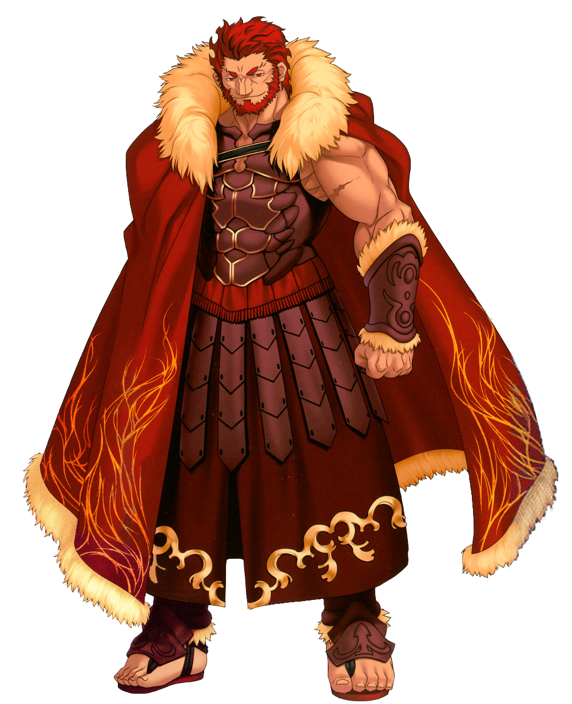

Fate / Stay Night: Unlimited Blade Works
Welcome to my anime website. Let me take you to a tour of my favorite anime series -- Fate.
Fate/Zero tells the story of the Fourth Holy Grail War, a secret magical tournament held in Fuyuki City, Japan where seven mages known as Masters summon Servants, reincarnations of legendary souls and heroes from all across time, where they fight in a deadly battle royale where the winner obtains the Holy Grail, a magical legendary chalice capable of granting wishes. The main protagonist, Kiritsugu Emiya, the foster father of Fate/stay night's protagonist, Shirou Emiya, is known as a merciless mage killer who joins the tournament on behalf of his wife's family, the Einzberns.
| Name | Background |
|---|---|
| Kiritsugu Emiya | Master of Saber. Representative of Einzbern famlity in the the Fourth Holy Grail War. |
| Saber | Servant of Kiritsugu Emiya. Her truth identity is Artoria Pendragon, the King of Knights. |
| Irisviel von Einzbern | Kiritsugu's wife. A homunculus prototype created by the Einzbern family. |
| Kirei Kotomine | Biggest rival of Kiritsugu Emiya. Master of Assassin. |
| Profile | Class | Identity | Master | Parameters | Noble Phantasm(s) |
|---|---|---|---|---|---|
| Saber | Artoria Pendragon (King Arthur) | Kiritsugu Emiya | 1. Invisible Air renders her sword invisible, concealing its length. 2. Excalibur, a powerful attack where a massive beam of light erupts from her sword. 3. Avalon, a sword sheath that grants rapid regeneration. |
||
| Gilgamesh | Tokiomi Tohsaka | Archer | 1. Gate of Babylon: a portal that fires several weapons as projectiles. 2. Enkidu: an unbreakable chain that binds opponents. 3. Ea: a sword that emits an amazingly destructive attack with a huge radius. |
||
|  | Rider | GIskander (Alexander the Great) | Waver Velvet | 1. Possesses a powerful chariot capable of flight. 2. Ionioi Hetairoi lancersummons his past armies to attack enemies. |
|
| Lancer | Diarmuid | Kayneth El-Melloi Archibald | 1. Golden spear Gae Buidhe creates wounds that cannot be healed. 2. Crimson spear Gae Dearg pierces through mana. |
||
| Caster | Gilles de Rais (Bluebeard) | Ryuunosuke Uryuu | Wields a book filled with infinite mana, allowing Gilles to summon numerous demonic creatures. | ||
| Assassin | Hassan-i-Sabbah | Kirei Kotomine | Has multiple bodies with individual personalities; all must be killed for Hassan to truly die. | ||
| Berserker | KLancelot | Kariya Matou | 1. Knight of Honor makes anything Lancelot touches become a powerful weapon that he knows how to perfectly wield. 2. For Someone's Glory hides his identity and allows Lancelot to disguise himself as others Servants. 3. Arondight, a durable sword that boosts the battle attributes of Lancelot by one rank each. |
Fate Stay Night follows the story line of Shirou Emiya, a high school student and amateur magus living in Fuyuki City, Japan. Shirou is unexpectedly brought into the Fifth Holy Grail War, a secret magical tournament in which seven participants, known as "Masters", and their "Servants", reincarnated personifications of legendary historical heroes, fight in a battle royale for the Holy Grail, an omnipotent magical chalice that can fulfill any wish or desire for its victor. When Shirou and his Servant Saber are forced to team up with Rin Tohsaka, another Master in the Holy Grail War, Shirou finds himself earning the strong dislike of Rin's mysterious Servant Archer, whose motivations are unknown.
| Name | Background |
|---|---|
| Shirō Emiya | Master of Saber. A good-hearted and honest teenager who acutally desires a nemesis to defeat to truly become a hero. He was saved by Kiritsugu Emiya from the Fourth Holy Grail War. |
| Rin Tohsaka | Master of Archer. A model student and idol of Shirou's school. The successor to her family's magecraft, instructed by her father to prioritize sorcery over her own interests. |
| Sakura Matou | Master of Rider. A first-year high school student, the foster sister of Shinji Matou(actual sister of Rin Tohsaka). Outwardly shy and timid, but possesses great inner strength. |
| Illyasviel von Einzbern | Master of Berserker. A young Teutonic aristocrat who travels to Japan to participate in the Fifth Holy Grail War. She has an angelic appearance and an unsurpassed degree of magical power. |
| Kirei Kotomine | (Master of Gilgamesh) A priest who acts as the supposedly impartial overseer of the Holy Grail War pursuant to an agreement between the Mages' Association and the Holy Church, but actually uses the rule to achieve his evil desire. Biggest rival of Shirou Emiya. |
The story is set in a parallel world to original Fate/stay night, where the House of Einzbern summoned a Ruler rather than an Avenger in the Third Holy Grail War, and the Holy Grail was removed from Fuyuki City to Romania after the war. It focuses on the conflict between the two opposing factions, Red and Black, each summoning seven Servants and the Grail itself summoning a special Ruler-class servant as a mediator of the Holy Grail War. The Red faction members are mages sent by the Clock Tower Mage's Association, while the Black faction members are part of a Romanian group of magi called Yggdmillennia.
| Name | Background |
|---|---|
| Sieg / Homunculus | A Homunculus created by Gordes Musik Yggdmillennia,saved by Ruler, Rider of Black, and Saber of Black who sacrifices himself so Sieg may live longer than the normal 3 years allotted to homunculi. |
| Ruler / Jeanne d'Arc | The Ruler-class Servant, the Standard-Bearer who Correctly Guides the Holy Grail War. |
| Black Faction | The Black Faction is made up of members of Yggdmillennia and the independent Reika Rikudou who ended up with Assassin's contract. The vanguard of their combat force consists of many homunculi crafted by the family and golems crafted by Caster of Black. |
| Red Faction | The Red Faction consists of people selected by the Clock Tower specifically for the purpose of retrieving the Greater Grail and stopping Yggdmillennia's defection.They seek one Master(Shirou Kotomine) from the Church in order to have their involvement prove the legitimacy of their cause. |
| Profile | Class | Identity | Master | Parameters | Noble Phantasm(s) |
|---|---|---|---|---|---|
 |
Caster | Avicebron, also known as Solomon ibn Gabirol, an eleventh-century poet and philosopher. | Roche Frain Yggdmillennia | Golem Keter Malkuth: Royal Crown, the Light of Wisdom, an unfinished Noble Phantasms that aim to reproduce God's miracle in the creation of life by bringing forth a copy of the Primordial Human.[Anti-Amry] |